Techniques de padel : les coups essentiels et comment les utiliser
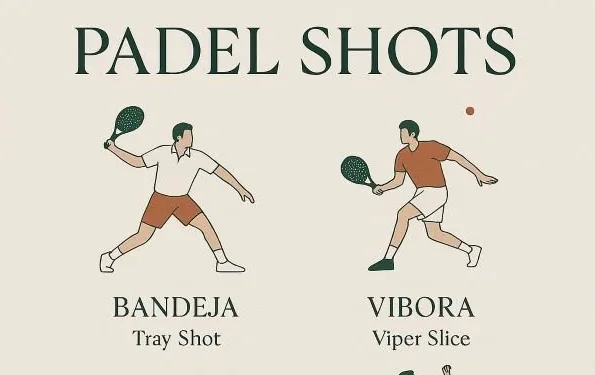
Quand on débute au padel, on a parfois l’impression d’entendre parler une langue étrangère. Entre la personne qui vous conseille une « bandeja » et l’adversaire qui glisse une « chiquita », il est facile de perdre le fil.
Ce vocabulaire, largement hérité des origines hispaniques du sport, décrit des coups très spécifiques. Voici donc le dictionnaire pratique pour comprendre quand et pourquoi les utiliser, sans chercher à tout maîtriser dès la première partie.
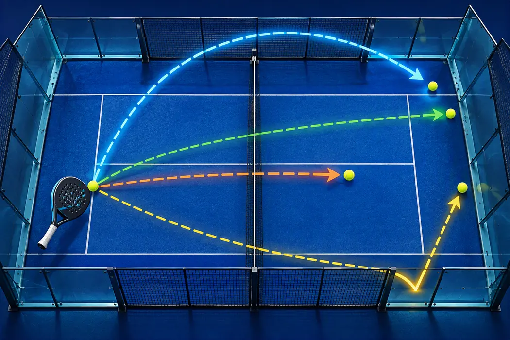
1. Position d'attente et prise de raquette
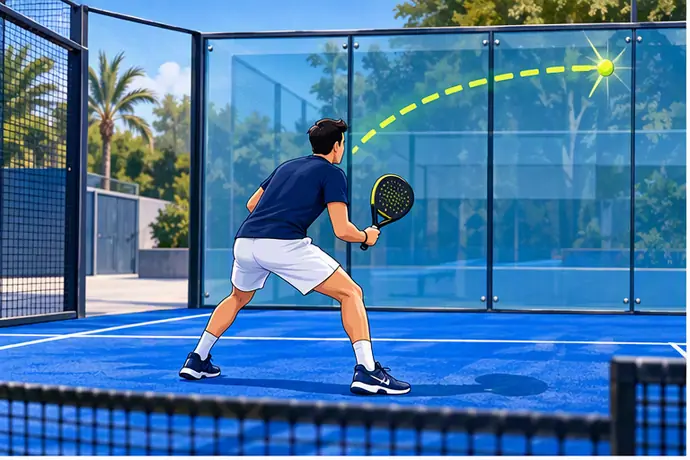
La position d’attente doit permettre de réagir sans changer toute la posture. Gardez les jambes souples, le buste légèrement incliné, les coudes décollés du corps et la tête de raquette devant le sternum.
Comprendre le nom des prises
Le nom d’une prise indique l’orientation de la main et de la face de raquette. Imaginez le manche comme un petit octogone : déplacer la base de l’index d’un pan modifie l’angle naturel de la raquette.
Prise continentale
Comme si vous serriez un marteau. La tranche de la raquette reste presque verticale. C’est la référence au padel pour les volées, la vitre, la bandeja et les changements rapides coup droit/revers.
Prise eastern
La main tourne légèrement vers le côté coup droit. La face se ferme un peu et facilite une frappe devant le corps, mais les transitions vers le revers deviennent moins immédiates.
Semi-western
La main tourne davantage sous le manche. Cette prise peut favoriser l’effet lifté, mais elle convient moins aux balles basses et aux changements rapides typiques du padel.
Repère simple : débutez en continentale. Ajustez seulement si un geste précis le justifie, puis revenez à une prise neutre en position d’attente.
2. Coup droit et revers de fond de court
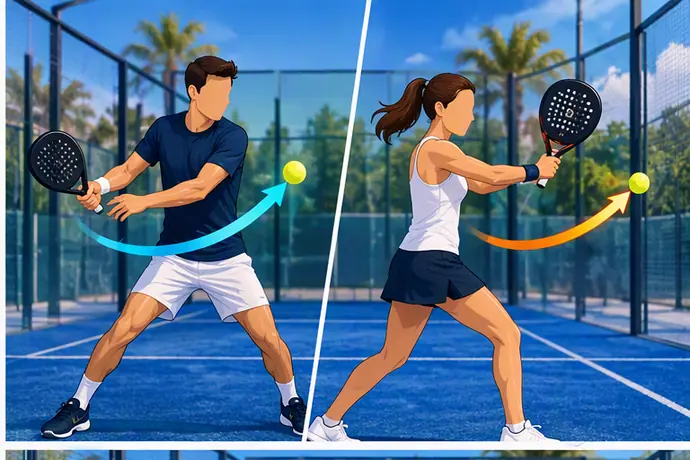
Au fond, recherchez une préparation compacte et un point d'impact devant le corps. Au début, le plus utile est simplement de remettre une balle qui vous laisse le temps de vous replacer. Évitez de reculer en frappant lorsque vous pouvez utiliser la vitre et laisser la balle venir.
Exercice
Réalisez des diagonales lentes en visant une grande zone. Comptez dix frappes sans faute avant d'accélérer.
3. Le lob : reprendre le filet
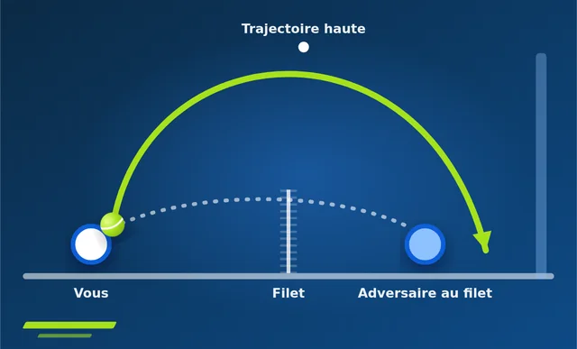
Le lob est un coup tactique majeur. Il oblige l'équipe adverse à reculer et peut permettre d'avancer ensemble. Jouez-le suffisamment haut pour passer les adversaires, mais avec une profondeur qui limite un smash facile. Le lob croisé offre davantage de longueur disponible, tandis que le lob parallèle peut surprendre mais laisse moins de marge.
4. Volée de coup droit et de revers
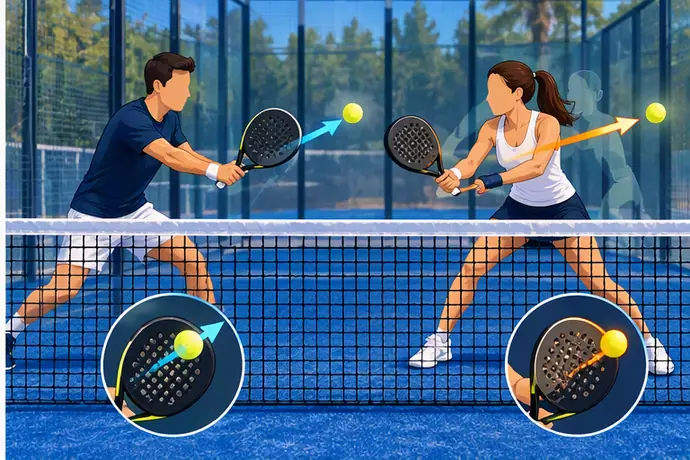
La volée se joue avec une préparation courte. Avancez vers la balle, stabilisez la face de raquette et utilisez surtout le placement. Une première volée profonde ou au centre peut être plus efficace qu'une tentative de gagnant proche de la ligne.
Zones utiles
- dans les pieds d'un adversaire qui avance ;
- au centre pour créer une hésitation ;
- profonde vers la vitre lorsque la balle est confortable ;
- courte uniquement si la position permet de couvrir la réponse.
Publicité responsive intégrée
5. La bandeja : conserver le filet
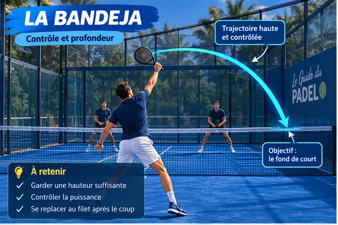
La bandeja est une frappe au-dessus de la tête utilisée sur un lob que l'on ne peut pas smasher proprement. Son objectif principal est souvent de garder le filet avec une balle contrôlée et difficile à contre-attaquer. La grille de niveaux FFT associe l'apprentissage de la bandeja ou de la víbora lente au maintien de la position au filet.
Repères
- tournez les épaules tôt ;
- déplacez-vous pour frapper en équilibre ;
- contactez la balle devant et sur le côté ;
- privilégiez profondeur et sécurité ;
- revenez au filet avec votre partenaire.
6. La víbora : une option plus agressive
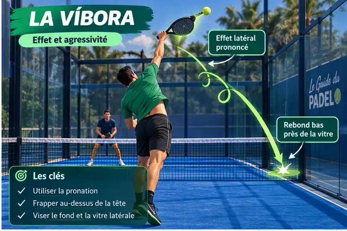
La víbora utilise davantage d'effet latéral et une trajectoire plus agressive que la bandeja. Elle demande un bon placement et une face de raquette maîtrisée. Apprenez-la après avoir acquis une bandeja régulière : chercher trop tôt l'effet augmente les fautes et peut dégrader le contrôle.
7. Le smash : choisir plutôt que forcer
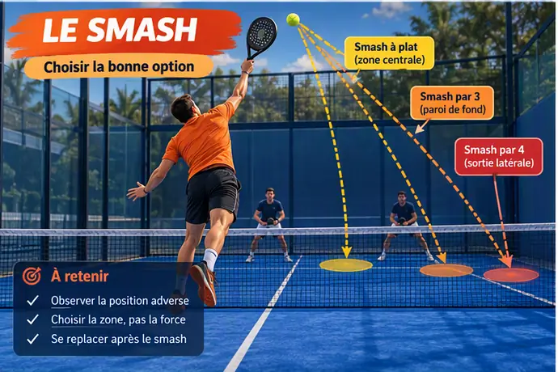
Le smash à plat peut terminer le point lorsque la balle est courte et que le joueur est bien placé. Sur un lob profond, une bandeja contrôlée est souvent plus sûre. Les smashs par trois ou par quatre nécessitent technique, lecture de trajectoire et conditions favorables ; ils ne sont pas la priorité d'un débutant.
8. La chiquita : jouer dans les pieds
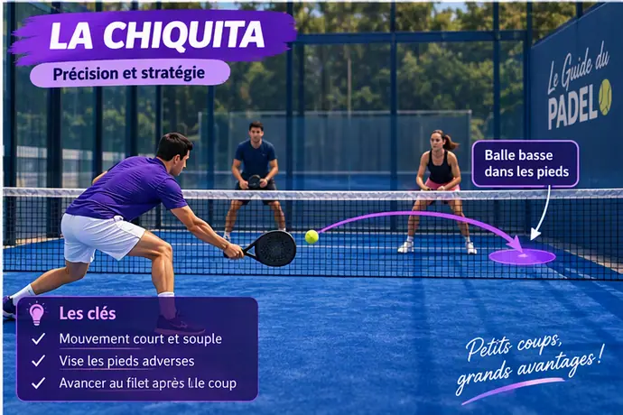
La chiquita est une balle lente et basse vers les pieds des joueurs au filet. Elle vise à provoquer une volée difficile et à avancer derrière la frappe. La trajectoire doit rester basse : une balle lente mais haute offre une attaque facile.
9. Jouer après la vitre du fond
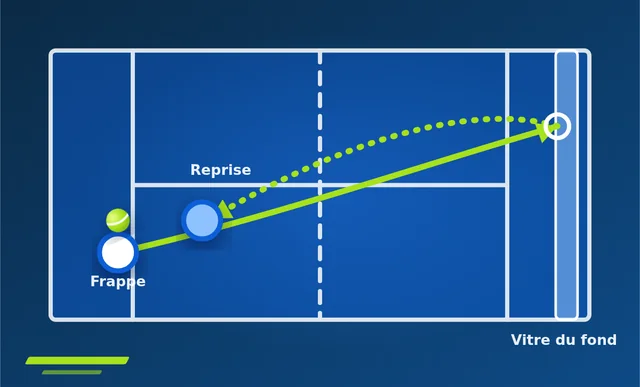
Laissez la balle toucher la vitre lorsque le rebond direct vous repousse ou rend la frappe inconfortable. Éloignez-vous suffisamment, observez la sortie de vitre puis accompagnez la balle. Une préparation courte facilite le contrôle. La défense après vitre apparaît progressivement dans les niveaux de pratique FFT, avant la maîtrise des doubles vitres et des défenses rapides.
Exercice
Un partenaire envoie dix balles lentes vers la vitre. L'objectif est de remettre haut au centre, sans chercher une zone difficile.
10. Double vitre et angles
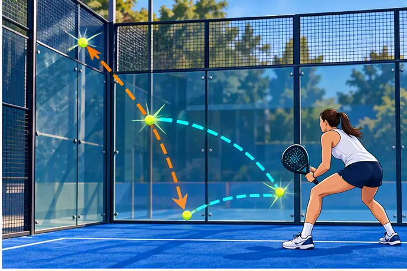
Sur une balle qui touche deux parois, ne décidez pas trop tôt. Observez l'angle d'arrivée et gardez une distance permettant d'ajuster les pieds. Commencez à vitesse lente, puis augmentez progressivement. Les doubles vitres exigent davantage de lecture que de force.
11. La bajada : attaquer après la vitre
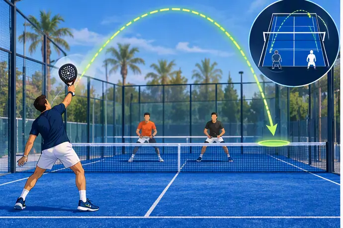
La bajada se joue sur une balle haute après la vitre du fond. Elle peut transformer une défense en attaque. Contactez la balle devant le corps et choisissez une zone claire, souvent au centre ou dans les pieds. Si le placement est tardif, préférez une remise contrôlée.
12. Transition fond-filet
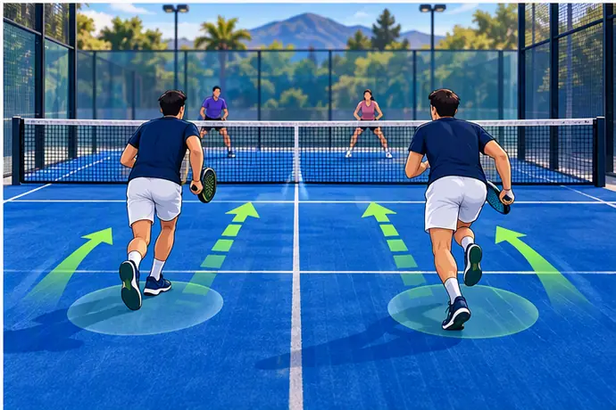
Montez ensemble après une balle qui met réellement l'adversaire en difficulté : lob profond, chiquita basse ou balle lente permettant d'avancer. Monter seul ouvre de grands espaces. La coordination du binôme est un élément technique autant que tactique.
13. Quelle progression pour débuter ?
- position d'attente et remise régulière ;
- coup droit, revers et service ;
- volées compactes ;
- lob ;
- sortie de vitre du fond ;
- bandeja lente ;
- angles, double vitre et chiquita ;
- víbora, bajada et smashs avancés.
Cette logique rejoint les niveaux FFT : les coups de base précèdent la défense après vitre, puis les effets et les coups avancés au-dessus de la tête.
14. Erreurs fréquentes
- préparation trop grande à la volée ;
- recherche systématique de puissance ;
- reculer en frappant au lieu d'utiliser la vitre ;
- monter au filet sans son partenaire ;
- jouer chaque balle près des lignes ;
- essayer une víbora rapide avant de contrôler la bandeja ;
- rester spectateur après sa propre frappe.
15. Questions fréquentes
Quel coup travailler en premier ?
La régularité du coup droit et du revers, le lob et les volées simples apportent le plus rapidement des solutions en match.
Bandeja ou smash ?
Bandeja lorsque le lob est profond ou que la position ne permet pas de terminer avec sécurité ; smash lorsque la balle est courte, le placement stable et la couverture du terrain maîtrisée.
Comment apprendre la vitre ?
Commencez lentement avec une trajectoire répétée. Cherchez une remise haute au centre avant de viser les angles.
Améliorez votre prise pour maîtriser les effets
Pour exécuter correctement ces coups, particulièrement la Vibora, il est crucial d'avoir une excellente accroche sur le manche grâce à des overgrips neufs.